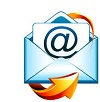
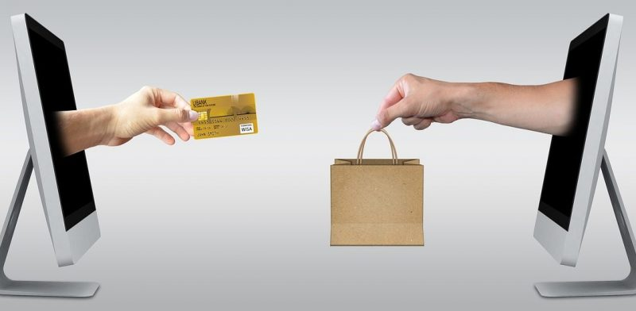

PROGRAMACION DE LAPSO 2021---2022
CORREOS ELECTRONICOS
PROGRAMACION DE LAPSO 2021---2022
CORREOS ELECTRONICOS
El correo electrónico es un servicio gratuito de mensajeria elecronica en el que puedes enviar y recibir mensajes de manera instantánea a través de Internet, incluiyendo fotografías o archivos de todo tipo de documentos.El Correo Electrónico es una de las fuentes de comunicación que se utiliza en la actualidad, siendo esta una de las mas importantes y una de las más completas, en las que no solo son enviados textos, sino tambien se envian imágenes, archivos, videos, audios, etc, llegando al destino de una forma segura y normalmente son totalmente gratuitos.
Historia del Correo electrónico Desde hace 50 años es que se ha venido hablando de lo que es el Correo, con el pasar de los años se ido evolucionando en cuanto a tecnología, estándares de calidad, abriendo una ventana a lo que actualmente conocemos como Correo Electrónico. Fue a través de una máquina telex, que permitió comunicarse con otra máquina por medio de una línea telex, en su momento brindada cierta seguridad de la información que se transmitía, por medio de ciertos acuerdos y protocolos de seguridad de la información. Es para los años 60 que surge que las Compañías grandes instalarán computadoras de gran capacidad y tamaño de almacenamiento, conectándose a terminales y a computadoras.
Para el año 1962 el Instituto de Tecnología obtuvo una computadora modelo IBM 7090 compartida, y para el año 1963 la actualizo a una IBM 7094 más moderna y de mayor capacidad, lo cual permitió que varios usuarios pudieran iniciar sesión desde terminales remotos, guardando la información en disco. Es en el año de 1965 que se crea el servicio de Mail, lo que ayudo al envió de mensajes entre los usuarios conectados de la máquina. Sin embargo, es para 1971 que el primer correo electrónico es enviado por medio de una blue.(Ver articulo de: Historia del Teatro) Cabe acotar que a los correos electrónicos se incorporó el arroba @ esto lo hizo el Ray Tomlinson un programador informático Estadounidense que dedicó su vida a esta materia, con la finalidad de separar el nombre del usuario de los datos del dominio a la cual pertenece la cuenta de correo, del servidor en que se deposita el correo. El significado Arroba @ en ingles se pronuncia at y significa en. El correo electrónico se ha fomentado el ámbito personal, de negocios y manejo de estrategias de negocios a nivel nacional e internacional. Gran parte de los desarrolladores de que trabajaron para crear mini ordenadores iniciales desarrollaron aplicaciones de correo similares, pero generalmente incompatibles. Con el tiempo, una compleja blue de puertas de enlace y sistemas de enrutamiento vinculó a muchos de ellos. )
1_.Rapidez.
La transmisión de los datos es casi inmediata y el riesgo de extravío de información en el camino es mínimo
2_.Seguridad.
Si bien es un tema debatido (el de la privacidad en Internet) suele estimarse que los proveedores de correo electrónico emplean potentes mecanismos de defensa para blindar los datos de sus usuarios de potenciales ladrones de información.
3_.Datos adjuntos
A pesar de que existen límites para el tamaño de los archivos adjuntos que pueden incorporarse a un mensaje de correo electrónico, suelen ser lo suficientemente generosos como para enviar la mayoría de los documentos personales que se deseen compartir. Para paquetes voluminosos de datos existen otras opciones digitales
4_. Versatilidad
Una casilla de correo electrónico puede usarse del modo en que su usuario lo desee, dentro de un cierto marco de regulaciones legales y procedimentales, claro
5_. Bajo costo
Hoy en día casi todos los servicios de correo electrónico son gratuitos.
6_. Ecológico.
Al no emplear papel real, tampoco produce desperdicios.
7_. Global
Puede consultarse en cualquier parte del globo.
8_. Envio de mensajes multiples
Capacidad para enviar mensajes a varios destinatarios
El correo electrónico hace posible que un mismo mensaje pueda ser enviado de manera simultánea a más de un destinatario
9_. Brinda comodidad al usuario
Para ver un correo electrónico no es necesario ir a un oficina postal, esto se puede hacer desde la comodidad de hogar, al aire libre o en la oficina. El usuario decide dónde y cuándo lo va a ver.
10_. No interrumpe el trabajo diario
Cuando se recibe un llamada es necesario interrumpir ciertas actividades. En cambio, cuando llega un correo electrónico no es necesario dejar de hacer lo que se estaba haciendo, ya que este puede esperar hasta que el usuario esté libre.

1_.No es interactivo
A diferencia de los chats o los servicios de mensajería instantánea, los correos deben leerse por turnos, en un diálogo de respuestas mutuas que no ocurre en tiempo real.
2_.Es vulnerable
Los piratas informáticos (hackers) y los virus informáticos tienen el correo electrónico como una de las formas privilegiadas de transmitirse en la blue, para lo cual emplean numerosos correos-trampa y formas de engaño para intentar acceder a la información del usuario descuidado.
3_.Requiere de Internet
En condiciones de poca conectibilidad o países con baja penetración de Internet, el correo simplemente no es una opción
4_. Requiere de un dispositivo
Para poder acceder al e-mail debe contarse con una computadora, teléfono inteligente o tableta.
5_.La recepción del mensaje no es señal de que fue leído
Aunque el mensaje enviado mediante el correo electrónico llega al buzón del destinatario inmediatamente, eso no quiere decir que el mismo ha sido leído.
6_.Facilita la propagación de virus
Usualmente los archivos adjuntos son propagadores de virus. Por consiguiente, es necesario tener un antivirus para escanear cada archivo, y sólo abrirlo cuando se haya confirmado que está libre de virus. De lo contrario podría contaminar el dispositivo.
7_.Permite que se envíe la información a un correo equivocado
Actualmente existen millones de cuentas de correo electrónico, y en algunos casos una dirección es muy similar a otra. Puede suceder que se envíe un mensaje a un correo equivocado, ya que para que se pueda enviar una información mediante el correo electrónico solo es necesario que la dirección de usuario exista
8_.Facilita el robo de información
Los usuarios guardan mucha información en los buzones y carpetas de los correos electrónicos. Esta situación ha hecho que puedan ser víctimas de hackers
9_. Permite que se envíe la información a un correo equivocado
Actualmente existen millones de cuentas de correo electrónico, y en algunos casos una dirección es muy similar a otra.
El Correo Electrónico durante los últimos años a evolucionado y junto a esto han venido siendo integradas nuevas mejores que lo caracterizan, pero aun asi no pierde su escencia que es recibir y enviar mensajes de cualquier tipo. Entre sus principales Características se encuentran:
1_.
Suele ser rápido y accesible en el que se pueda consultar y acceder desde cualquier computadora o equipo con esta funcion.
2_
Permite el envió de datos adjuntos como lo son archivos, imágenes, videos, audios, etc.
3_
Es económico, este servicio es utilizado de manera gratuita en todo el mundo siendo un servicio de excelencia y eficiencia..
4_
Es universal ya que este medio nos permite comunicarnos a cualquier distancia en cualquier país del mundo.
5_
Fue revolucionario y ecológico ya que no se requiere papel para su uso.
6_
Tiene la facilidad de conectarse a través de las plataformas de forma fácil y sencilla.
7_
La dirección correo electrónico se utiliza por cada persona, es decir, cada quien crea su propia cuenta de correo.Es personal

sea para fines académicos o de investigación, o personales.
1_.Bandeja de entrada
En donde reposan los mensajes recibidos por el usuario, en orden cronológico o personalizado.
2_.Bandeja de salida.
En donde pueden revisarse los mensajes enviados a los distintos destinatarios posibles.
3_.Spam.
Se llama con este nombre al correo no deseado, por lo general con publicidad o promociones engañosas, que suele filtrarse del contenido “legal” del buzón.
4_.Destinatario.
La persona a la que se escribirá un email.
5_.Asunto.
Una breve descripción del contenido del mensaje, que podrá ver el receptor sin tener que “abrirlo”, es decir, desde su bandeja de entrada en general.
6_.Cuerpo del mensaje.
El mensaje en cuestión que se desea transmitir.
7_.Archivos adjuntos.
Aquellos datos adicionales que se desean transmitir junto con el mensaje.
8_.CC/CCO.
El Siglas de Copia de carbón y Copia de carbón oculta, brindan al emisor del correo la posibilidad de enviar una copia idéntica a un tercer usuario que no es el destinatario directo del mensaje (cc), y también la opción de hacerlo sin que el destinatario lo sepa (cco).
9_.Descripción.
Un campo del correo recibido o enviado en donde se especifican los datos del mismo: su destinatario, su asunto, su fecha y hora de envío, así como otros datos técnicos que podrían ser de interés
Estar dado de alta en un correo electrónico, hoy en día es una realidad. Todos los usuarios de la blue, disponen de una dirección de correo electrónico y lo utiliza diariamente. En la actualidad, el uso del correo electrónico, se puede dividir en tres diferentes ámbitos, como: escolar, laboral y personal. En el ámbito escolar, se suelen enviar trabajos, archivos, ejercicios… hechos en clase o en casa, al profesor, para que el profesor corrija y ponga nota de dicho trabajo, ya que es más cómodo que imprimirlo al papel. En el ámbito laboral, esta muy avanzado, ya que para reuniones, charlas, conferencias, se envían correos electrónicos a un grupo de trabajadores, para que así, todos sepan cuando es dicha reunión, charla… También, se emplea para enviar facturas, cotizaciones…, a los clientes.
En el ámbito personal, se utiliza para enviar correos electrónicos, entre amigos, familiares…, siendo estas personales o los denominados correos cadena. Los correos cadena, son correos que se envían diariamente, con presentaciones powepoints, fotos, audios, videos, textos…, que te dicen que si reenvías este mensaje a tal persona, tu suerte cambiara y de esas cosas, y por este motivo, casi todo el mundo reenvía estos mensajes a un grupo de amigos, es decir, son correos electrónicos diarios que se reenvían a todos tus contactos, amigos o familiares.
En la actualidad evaluaciones sobre a calidad educativa de los alumnos que egresan de la escuela media han demostrado que la mayoría no comprenden bien lo que leen y tienen serias deficiencias es poder razonar eficientemente. Por eso deben tener bien en cuenta la forma como la Internet puede mejorar la calidad del educando ya que este se puede en algunos casos revertir en su contra ya que por lo fácil que es acceder a esta fabulosa herramienta los adolescentes no se detienen a analizar ni a interpretar lo que allí se les trata de emseñar.
BREVE HISTORIA DE LOS CORREOS ELECTRONICOS
VENTAJAS DE LOS CORREOS ELECTRONICOS
DESVENTAJAS DE LOS CORREOS ELECTRONICOS
CARACTERISTICAS DE LOS CORREOS ELECTRONICOS
PARTES DE LOS CORREOS ELECTRONICOS
IMPORTANCIA DE LOS CORREOS ELECTRONICOS
FUNCIONES DE LOS CORREOS ELECTRONICOS